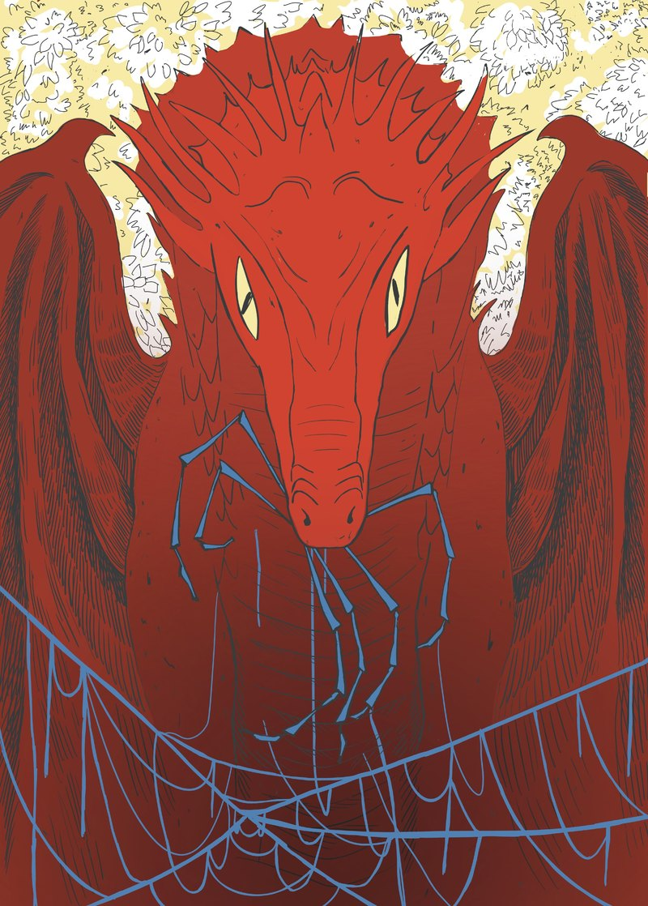
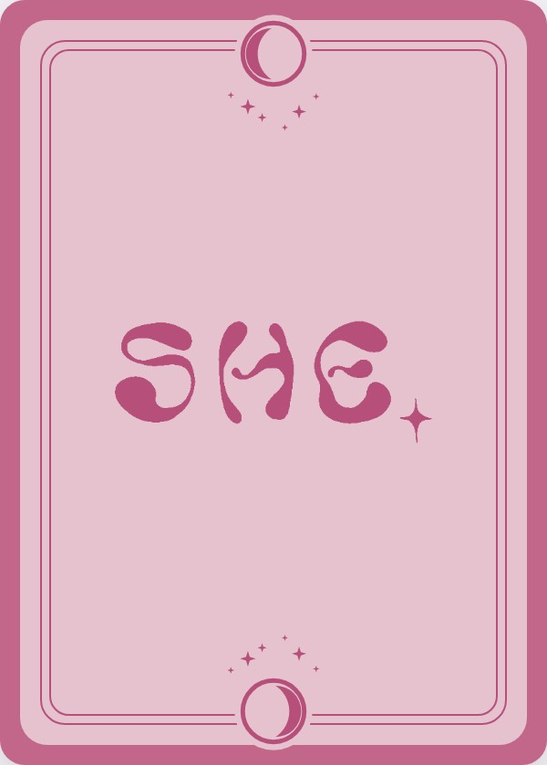

Что мешает вам
двигаться дальше?
Выберите 1, 2 или 3
и идите по своей линии
Не отрывайте глаз
от своей линии
2/8
3/8



1

2
3
Выберите 1, 2 или 3
и идите по своей линии
Не отрывайте глаз
от своей линии


Красный дракон велик и страшен, но держат его тонкие синие нитки. Страх тоже кажется больше, чем он есть, пока к нему не подойдёшь.
Чего вы боитесь сейчас?
Она свернулась в траве, и стебли оплели её так, что не видно, где она сама. Так бывает, когда долго думаешь об одном.
О чём вы думаете по кругу?
Корни проросли сквозь каменный коридор, и маленькая женщина в красном пробирается между ними. Каждый корень когда-то был тонким.
Какая привычка загородила вам дорогу?
Напишите в комментариях.
Отправьте подруге —
пусть выберет свою.

40 карт, которые я нарисовала сама. 18+